Una experiencia de Totem Studio
Abelardo Q
Vuela bajo. Esquiva las rocas. Completa la misión.
Preparando la misión
Cargando el juego…

Una experiencia de Totem Studio
Vuela bajo. Esquiva las rocas. Completa la misión.
Preparando la misión
Cargando el juego…
Dos escenarios extra en versión web, creados para esta edición. Se vuela con el teclado o con un mando (PlayStation, Xbox…) conectado al ordenador.